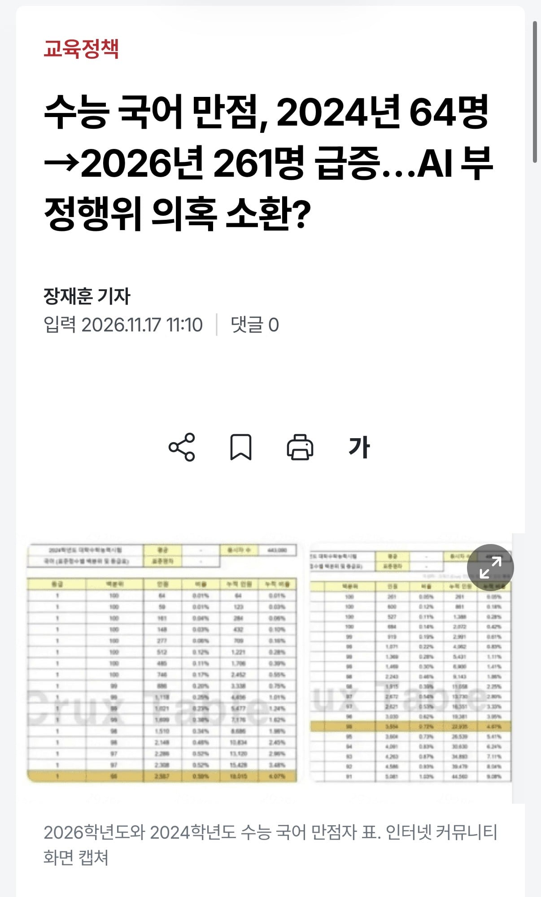
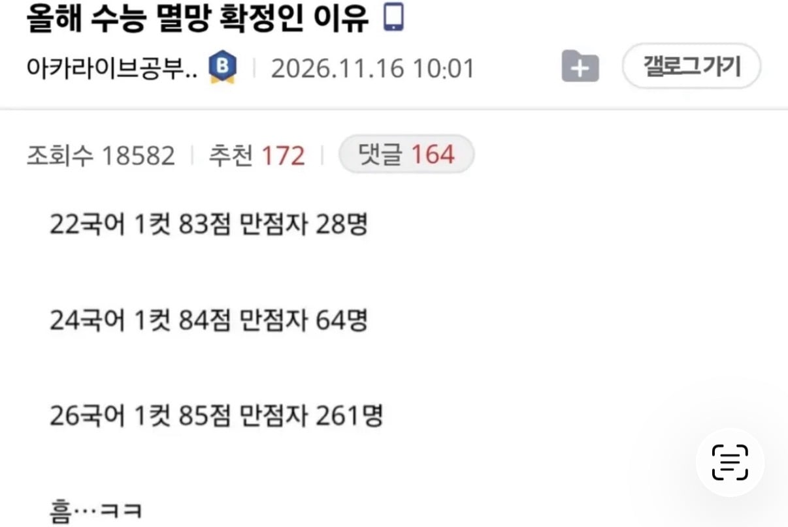

선동하려는거에 안맞거든 ㅋㅋㅋ
천명넘어서 선동에 방해되니까
?
선동흐름에서 벗어나니까
1등급컷 비슷한 년도 모아놓은거임.
25년 1등급컷은 92점이라 시험이 쉬웠던 해라 만점자가 많을 수 밖에 없음
83, 84, 85점으로 2점 밖에 차이가 안나는데 만점자가 9배까지 뻥튀기 되는게 이상한거임.
이런것도 잔머리라 해야하나 ㅋㅋㅋㅋ
와 10년대엔 두 개 틀리면 2등급이었는데 요즘 수능 어렵긴 한가보네
11년도 수능: ???
걍 영어는 2등급 비율까지 3년내내 줄어들었음 ㅋㅋ 저런걸로는 특정안됨
AI 과도기 막히기 전 써먹는 자가 승리자 인건가?
더이상 짧은 시간안에 정답을 찾는 시험은 의미가 없는것 같아
25학년도는 1055명이었고 19학년도는 1309명이었음 선동벌레 컷
홀수년 짝수년 차이구나
불수능 물수능은 반복된다
어쩐지 작년이 25년인데 24년을 보여주더라ㅋㅋㅋ
https://news.kbs.co.kr/news/pc/view/view.do?ncd=4087470
한국교육과정평가원은 지난달 15일 실시된 2019학년도 대학수학능력시험 채점 결과를 오늘(4일) 공개했습니다.
국어영역의 표준점수 최고점(원점수 만점)은 150점으로 지난해 수능(134점)보다 16점이나 올랐는데 만점자는 52만8천여 명의 국어영역 전체 응시자 가운데 148명(0.027%)에 불과했습니다.
19학년도 1309명은 어디서 나온거임?
설마 6월 모의평가 ?
25학년도 1등급 컷이 92점이였음. 시험이 쉬웠으니까 만점자가 많을 수 밖에 없지
1등급컷이 비슷한 22, 24, 26학년도 수능끼리 비교했을 때 만점자 수가 이상하리만큼 튄다는걸 이해못하는거?
19학년도 84점 만점자 148명
21학년도 88점 만점자 151명
22학년도 83점 만점자 28명
24학년도 84점 만점자 64명
26학년도 85점 만점자 261명
1컷이 다른데 무슨 선동이야 ㅋㅋㅋㅋㅋ
이런댓글이 선동이지
26수능은 작년 아님?
뭐든 막차타면 망함
아직도 이런거에 낚인다고
걍 문제가쉬워 이번꺼
1컷은 왜 1점밖에 차이안남?
학년도 / 표준점수 최고점 / 만점자 비율 (22학년도 이후 언매 기준)
2026학년도 / 147점 / 0.165% (261명)
2025학년도 / 139점 / 0.617% (1,055명)
2024학년도 / 150점 / 0.036% (64명)
2023학년도 / 134점 / 0.237% (371명)
2022학년도 / 149점 / 0.021% (28명)
2021학년도 / 144점 / 0.04% (151명)
2020학년도 / 140점 / 0.16% (777명)
2019학년도 / 150점 / 0.03% (148명)
2018학년도 / 134점 / 0.61% (3,214명)
표준 점수 최고점이 7점이나 차이나는 2020학년도와 2026학년도 만점자 비율이 비슷한게 말이 된다고 생각해?
https://www.mk.co.kr/news/it/11172587
챗GPT가 달라졌다 … 수능국어 8등급서 올해는 1등급 / 정호준 기자 이용익 기자 / 업데이트 : 2024.11.19 20:32
올해 9월 출시된 오픈AI의 챗GPT o1-프리뷰 모델이 2025학년도 수능 국어 영역에서 원점수 97점으로 1등급권에 안착했다. 올해 수능 국어 영역에서 단 한 문제만 틀리고 모두 맞힌 셈이다. 선택 과목은 '화법과 작문'으로, 해당 과목의 추정 등급 컷은 93~95점 수준이다.
챗GPT 기존 모델인 GPT-4o (2024년 5월 출시)모델은 2023~2024학년도 수능에서 모두 중위권 학생 수준인 4등급을 기록했다.
23년까지 4등급 수준이던 AI 성능이 24년 9월 1등급 수준까지 올라오면서 2025학년도 만점자 수가 폭등함. 물론 표준점수가 상대적으로 낮은 수능이였다는걸 고려해도 만점자 비율이 역대 유래없는 수준임.
2026학년도 또한 마찬가지로 표준점수 최고점대비 만점자 비율이 과거 수능 대비 터무니 없이 높음
표준점수 최고점 동점인 2018년도와 2023년도 만점자 비율이 3배에 가깝고 만점자 수만 따지면 9배에 가까운데 2018년도 ai는 얼마나 성능이 좋았던 것이냐
생각 좀 하자. 응시자 수가 다르니까 만점자 수가 많게 잡히는 거잖니
18학년도는 단일 시험, 23학년도는 화작, 언매로 나뉘 잖아
이런 애들이 있으니 국평소 소리가 나오는거지
니가 22년 이후 언매라고 올렸지
그러니깐 니가 비교한 년도인 2020년도는 언매 이전인 단일시험이겠지? 그리고 2026년도면 언매시기고
니는 왜 그렇게 비교해놓고 나는 그렇게 비교하면 안되? 뭔가 이상하다고 생각안해?
진짜 멍청한건지 아니면 정답을 정해두고 일단 이유를 짜맞추는건지 모르겠네
비율이 뭔지 모름?
2018학년도 단일시험 53만명 중 만점자 비율 0.61% 3200명
2023학년도 언매 15만명 중 만점자 비율 0.237% 370명
표준점수 최고점은 언매에서만 나오니까, 응시자 수가 적은 23학년도 만점자 수가 적은거라고.
생각이 존나 짧네 진짜
추가로 댓글 달자면
화작 만점자는 표준점수 130점이라 언매 표준점수 최고점인 134점 만점자 수에 포함 안된다.
그럼 병신 새끼야 니가 말한 2020년도랑 2026년도 표준점수와 만점자 비율은 왜 쳐 비교했는데?
그리고 2019년도랑 2024년도만 비교해도 비율 비슷하고 2018년도랑 2023년도 비율은 튄게 보이는데 뭔 개소리냐
만점자 수가 아니라 비율은 계속 얘기하면서 만점자 수랑 섞어서 지랄지랄하는게 결론을 이미 내놓고 어떻게든 근거를 만드는거 같은데 하나만 해라 하나만
추가 댓글까지 써줬는데 이새끼 이거 하나도 이해를 못했네
애초에 너 지금 수능 표준점수 계산방식도 모르지?
아무것도 모르고 있으니까 지가 이해를 못해놓고 누굴탓하고있냐
25년자료는 왜 빼고 적은거지